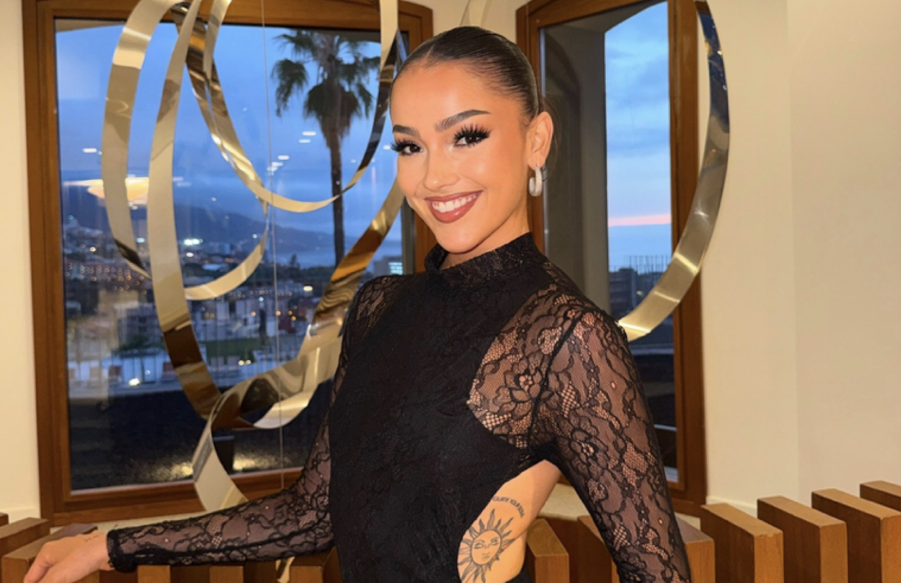
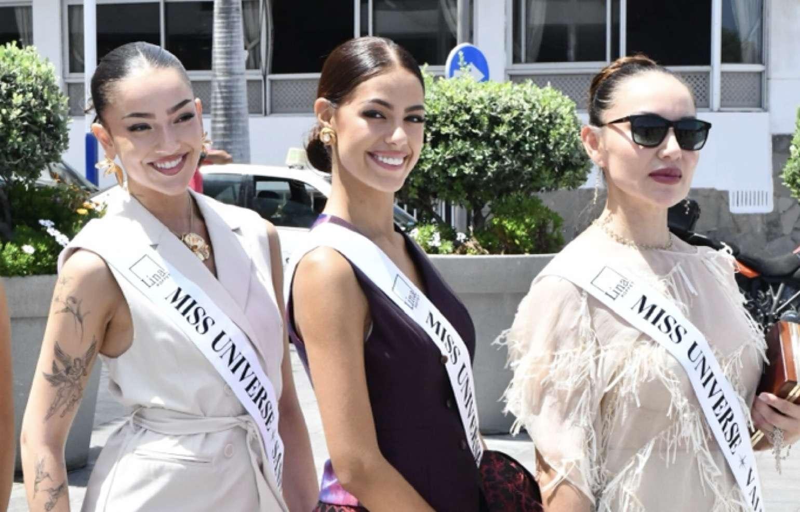

UNIVERSE
SANTA CRUZ
UNIVERSE
SANTA CRUZ
Santa Cruz de Tenerife volvió a situarse en el foco nacional apenas unos días después de la primera edición de Miss Universe Santa Cruz. Daniela Martínez Morales llegó a Miss Universe Spain 2026 como representante oficial de la provincia y culminó una intensa semana de concentración clasificándose entre las diez mejores candidatas del país.
La experiencia nacional se desarrolló del 12 al 18 de julio en el Gran Hotel Taoro, en Puerto de la Cruz, coincidiendo con las grandes fiestas de julio de la ciudad en honor a San Telmo y a la Virgen del Carmen. Durante esos días, candidatas procedentes de diferentes comunidades autónomas compartieron convivencia, preparación y una agenda repleta de compromisos oficiales.

Una semana de concentración en Puerto de la Cruz
El Gran Hotel Taoro se convirtió durante seis días en el centro de operaciones de Miss Universe Spain 2026. El histórico establecimiento acogió a las candidatas, al equipo nacional y a los distintos profesionales encargados de preparar cada detalle de la edición.
La coincidencia con las celebraciones dedicadas a San Telmo y a la Virgen del Carmen añadió una atmósfera especialmente festiva a la concentración. Puerto de la Cruz vivía una de sus semanas más señaladas del calendario mientras el certamen nacional desarrollaba su programación en distintos espacios de la ciudad.
Fotografía, ensayos y agenda oficial
La concentración combinó la preparación para la gala final con diferentes actividades destinadas a mostrar la personalidad, la imagen y la capacidad de adaptación de las candidatas. Las jornadas incluyeron sesiones fotográficas, ensayos, visitas oficiales, ruedas de prensa, desfiles, deporte, grabaciones y encuentros con medios de comunicación.
El ritmo de trabajo fue intenso. Cada jornada exigía puntualidad, organización y capacidad para desenvolverse en contextos muy diferentes, desde una sesión ante las cámaras hasta una aparición pública o un ensayo técnico sobre el escenario.

“El respaldo del público convirtió a Daniela en una de las diez finalistas de Miss Universe Spain 2026.”
Una final junto al mar
La gala final se celebró el sábado 18 de julio en el Complejo Martiánez, uno de los enclaves más reconocibles de Puerto de la Cruz. El escenario, integrado en un entorno abierto junto al Atlántico, ofreció una imagen especialmente espectacular gracias a la realización televisiva y a los planos aéreos y de dron.
La final fue retransmitida por diferentes cadenas, entre ellas Ahora TV y Mírame TV, además de televisiones internacionales y YouTube. La producción permitió seguir el desarrollo del certamen desde distintos territorios y proyectó la imagen de Tenerife a través de uno de sus espacios más emblemáticos.

Daniela, favorita del público y Top 10
Uno de los momentos más destacados para Santa Cruz llegó con el anuncio de la clasificación de Daniela Martínez Morales. La representante provincial obtuvo el pase al Top 10 gracias al voto de favorita del público, un reconocimiento que reflejó el respaldo recibido durante los días previos a la final.
Su entrada entre las diez mejores candidatas permitió que Santa Cruz de Tenerife mantuviera presencia en las fases decisivas del certamen. Para la organización provincial, el resultado supuso una confirmación del apoyo generado por Daniela y de la conexión construida con quienes siguieron su participación.
Danna Hernández también alcanza el Top 10
La primera edición de Miss Universe Santa Cruz también estuvo representada a través de Danna Hernández Cruz. Tras ser designada Miss Universe Galicia 2026, Danna logró clasificarse igualmente entre las diez mejores candidatas nacionales.
La presencia conjunta de Daniela y Danna en el Top 10 puso de relieve el nivel de las participantes vinculadas a la primera edición de Miss Universe Santa Cruz. Dos de sus candidatas consiguieron mantenerse en competición durante una de las fases más importantes de la gala nacional.

Susana Medina, nueva Miss Universe Spain
La edición concluyó con la proclamación de Susana Medina, representante de Las Palmas, como ganadora de Miss Universe Spain 2026. Su coronación puso el broche final a una semana de concentración y a una gala marcada por la dimensión televisiva, el entorno del Complejo Martiánez y la participación de candidatas procedentes de todo el país.
Para Santa Cruz, la noche dejó una clasificación en el Top 10 y el reconocimiento del voto popular. La representación provincial cerró así su participación nacional con un resultado que mantuvo a Daniela entre las protagonistas de la edición.
Una experiencia que dio continuidad al proyecto
La participación de Daniela Martínez Morales permitió que Santa Cruz de Tenerife estuviera presente entre las protagonistas de Miss Universe Spain 2026. Su clasificación gracias al respaldo del público puso el broche final a un intenso mes de julio para la organización.
La experiencia nacional comenzó apenas unos días después de la gala provincial y dio continuidad inmediata a un proyecto que acababa de celebrar su primera edición. La presencia de Daniela y Danna en el Top 10 demostró que la organización nacía con capacidad para proyectar a sus candidatas también en el escenario nacional.